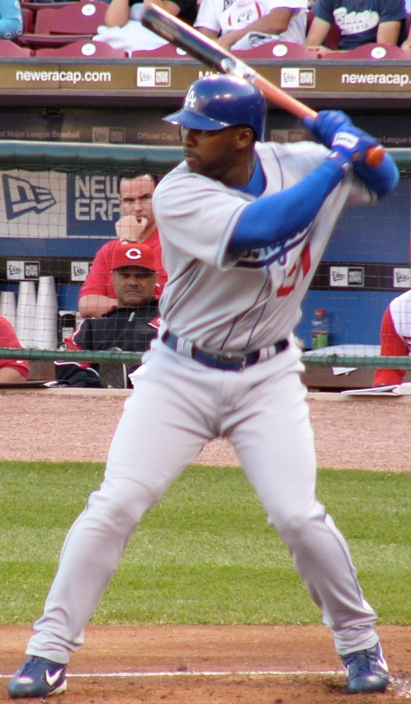

10
SOGBBB1B2BHR
Current / Local Photo
Best if we want cards to feel like real baseball cards. Also the hardest path for invented players unless we generate or license images.
Best card feelNeeds assets